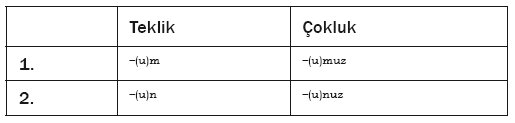

Sesbirimsel olarak KÇA’da 8 patlamalı /p b t d k j g j k g/, 9 sürtünmeli /f v s z š ž x G h/, 2 patlamalı/sürtünmeli /t s d z/, 2 genizsil /m n/, 1 kayıcı /y/, 2 akıcı /ł r/ olmak üzere 24 ünsüz bulunmaktadır. Tablodan da görülebileceği gibi KÇA’da, ÖT’de bulunmayan bazı ünsüz sesbirimleri bulunmaktadır. Bu tür ünsüzlerin sıkça kullanılan iki tanesi ötümsüz, dişyuvasıl, patlamalı-sürtünmeli /t s/ ve ötümlü, dişyuvasıl, patlamalı-sürtünmeli /dz/ ünsüzleridir. Bu ünsüzler KÇA’da birer sesbirimdir.
/ts/ sesbiriminin bir sesbirimciği [t s] ve bir serbest değişkesi [č] tespit edilmiştir.
Tablo 5: [t s] sesbirimciği ve [č] serbest
değişkesine dair örnekler
/dz/ sesbirimin bir sesbirimciği [d z] ve bir serbest değişkesi [] tespit edilmiştir.

Tablo 6: [d z] sesbirimciği ve [] serbest
değişkesine dair örnekler
Biçimsel Ses bilim
Biçimsel ses bilim açısından bakıldığında KÇA’da yaygın olarak kullanılan eklerin en dikkat çekici özelliği hemen hemen tüm eklerdeki ünlülerin sabit olması ve dolayısıyla herhangi bir sözcükdışı ünlü uyumuna uymamasıdır. Eklerin sözcükdışı ünlü uyumuna uymaması diğer Doğu Karadeniz Türkçe ağızlarında da rastlanan bir durumdur. Brendemoen[265] tarafından da belirtildiği üzere:
Burada, çoğu ek ön ünlüler içeren ekler halinde ölçünleştirilmiştir, örneğin üçüncü çoğul şahıs eki olarak –ler ve daha az sıklıkla görülmekle beraber yönelme ve bulunma hali ekleri böyledir. Diğerleriyse uyumlu olmayan arka ünlülere sahip ekler halinde sabitlenmiştir, örneğin dilek-şart kipi –sa ve olumsuzluk eki –ma böyledir. Benzer örneklere başka yerlerde de rastlanabilir.
Öner[266] ve Pehlivan[267] da sırasıyla bazı Trabzon ve Rize ağızlarında sabit ünlülere sahip ek yapısı bulunduğundan söz etmektedir.
Ek ünlülerinin sabit olması Eski Türkçe (ET) döneminde de görülen bir özelliktir. Johanson’un da belirttiği gibi
Runik yazının grafik kullanımından da açıkça görülebileceği üzere Eski Doğu Türkçesinde seslemler arası ön-arka uyumu vardır. Ama aynı zamanda, tek bir değişmez forma sahip olan uyumdışı ekler Türkçe’nin gelişiminin tüm aşamalarında olduğu gibi burada da mevcuttur. Yönelme eki -qa arka ünlülü bir ek iken, iyelik eki -(s)i, post-terminal ek -miš, ad aktörleştirme eki -či ön ünlülü eklerdir. Bildiğimiz en eski Türkçe kelimelerde bile böyle uyum göstermeyen diziler mevcuttur.[268]
Aşağıda da görülebileceği gibi yukarıdaki alıntıda örnek olarak verilen yönelme eki dışındaki ekler KÇA’da da aynı şekilde kullanılmaktadır. KÇA’da sabit ünlülü eklerin yanı sıra, az da olsa bazı eklerin ünlüleri itibarıyla farklılaşan değişkeleri vardır. Bu değişkeler herhangi bir uyuma uymaz. KÇA’da biçimsel ses bilimsel açıdan ekler, ünlüleri itibarıyla değişkesi olmayanlar;

Tablo 7: Ünlüleri itibarıyla değişkesi olmayan eklere örnek
ve değişkesi olanlar; şeklinde iki ana başlık altında toplanır.
Tablo 8: Ünlüleri itibarıyla değişkesi olanlara örnek
Yönetimsel Ses Bilim
KÇA’da ses uyumu olmamakla birlikte, ağızdaki ünlü ve ünsüz seslerin etkileşimiyle ilgili ilginç olgular mevcuttur. Söz konusu olgular yönetimsel ses bilim çerçevesinde inceleneceği için öncelikle yönetimsel ses bilimin çalışmada kullanacak temel özellikleri kısaca özetlenecektir. 1980’lerin ortalarında J. Kaye, J. Lowenstamn ve J.-R. Vergnaud tarafından geliştirilen Yönetimsel ses bilim (YS), bir dilin ses biliminin, dillerin ses biliminin genel yapısını belirleyen evrensel ilkeler ve tek tek dillerin içsel yapısını tanımlayan değişkenler tarafından oluşturulduğu varsayımı üzerine kuruludur.
Yapı
YS kuramında en küçük yapısal birim seslem değil, açış-çekirdek çiftidir –buradan itibaren AÇ çifti olarak kısaltılacaktır– ve şu şekilde gösterilir:
Bir AÇ çiftinde, açış her zaman çekirdekten önce gelir ve çekirdek çiftin başıdır. Bu bağlamda, ünsüzler ve ünlüler sırasıyla açış ve çekirdeğe karşılık gelir. Bir sonraki inceleme birimi olan alan, AÇ-dizileri şeklinde yapılanmıştır. Alan bir sözcük, sözcük parçası ya da bir cümle olabilir. Örneği ÖT’deki teneke sözcüğünün oluşturduğu alan şu şekilde gösterilir.
Öğeler
YS kuramına göre temel yapıtaşları öğelerdir çeşitli şekilllerde gösterilebilir. Bu çalışmada aşağıda belirtilen gösterim biçimi benimsenmiştir:[269]
Tablo 9: YS kuramında bulunan öğeler
Ses bilimsel ifadeler öğelerin birleştirilmesi ve/veya yapılandırılması suretiyle oluşturulur. Bu çalışmada ünlüler, yani çekirdeklerde bulunan ve A,I ve U öğelerinden oluşan ifadeler ele alınacaktır. (A), (I) ve (U) gibi tek bir öğeden oluşan ifadelere yalın ifade denir. (A.I), (U.I) ve (A.I.U) gibi öğe birleşimleriyse karmaşık ifadeler olarak adlandırılır. Karmaşık bir ifadede öğeler tekrar edilemezler, yani (I.A.I) şeklinde bir ifadeye izin verilmez. Örneğin ÖT’de bulunan sekiz ünlünün yedisi A,I ve U öğeleriyle ifade edilebilir.
Tablo 10: Yönetimsel ses bilime göre ÖT ünlülerinin gösterimi
Bu diyagramda her bir daire bir öğeyi göstermektedir. Örtüşmeyen bölgeler yalın ifadelerle gösterilen (I) [i], (A) [a], ve (U) [u] ünlülerini temsil eder. Kesişim bölgeleriyse örtüşen öğelerin birleşimini ifade etmekte ve karmaşık ifadelerle gösterilen (U.I) [ü], (A.I) [e], (A.U) [o] ünlülerini ifade etmektedir. Her üç bölgenin kesişimiyse (A.I.U) [ö] ünlüsünü temsil etmektedir. Bu yedi ünlüye ek olarak, sekizinci ünlü olan ( ) [1] herhangi bir öğe içermeyen boş bir daireyle gösterilir.
( ) ile gösterilen boşluğun yorumu dilden dile değişir ancak genellikle ya Fransızca’da olduğu gibi schwa [@] ya da Türkçe’de olduğu [1] şeklindedir.
Başlar ve İşlemciler
İfadelerin, öğeler arasındaki ilişkileri belirleyen bir iç yapısı vardır. Bir ifade içerisinde yer alan öğeler ya baş ya da işlemci rolü üstlenir. Bir ifadede en çok bir tane baş olabilir. Baş, altı çizili bir öğeyle, örneğin (I) [i] şeklinde gösterilir ve uzlaşma gereği ifadenin en sağına, örneğin (A.I) şeklinde yazılır. İşlemcilerin sıralanışı önemsizdir, örneğin (I.U.A) ve (U.I.A) ifadelerinin her ikisi de aynı [ö] ünlüsünü temsil eder. Aynı öğelerden oluşan iki farklı ifadede iç yapıların baş tarafından belirlenmesi itibarıyla baş işlemcilere göre daha üst bir konumdadır. Örneğin A ve I öğelerinden oluşan (I.A), (A.I) ve (A.I) ifadeleri sırasıyla üç farklı ünlüye [E], [e] ve [{] karşılık gelir.
İzin Kısıtlamaları
Bu çerçevede YS kuramı dâhilinde, 12 başlı,
Tablo 11: YS kuramına göre ünlüleri ifade eden olası başlı ifadeler
7 başsız ve bir boş ifade
Tablo 12: YS kuramına göre ünlüleri ifade eden olası başsız ifadeler
olmak üzere toplam 20 ifade oluşturmak mümkündür. Bu herhangi bir dilde olabilecek ünlü sayısının üst sınırıdır. Bununla birlikte, “dünyadaki hiçbir dilde bu kadar devasa bir çekirdek sistemi yoktur. Dolayısıyla bu yirmi olasılığı verili bir dilde bulunan ifadelere tam olarak indirgeyecek bir düzeneğe gereksinim vardır”.[270] Söz konusu düzenek, YS kuramının tüm diller için geçerli sayılan evrensel ilkelerinden farklı olarak her bir tekil dilin özgün değişkenlerini oluşturan birtakım kısıtlamalarla belirlenir. Bir öğenin hangi rolü üstleneceği, işlemcilere izin verip veremeyeceği ya da kendisine izin verilip verilmeyeceği gibi tekil öğelere dair özellikleri tespit eden önermeler izin kısıtlamaları –buradan itibaren İK– olarak adlandırılır. Bir dilin ya da ağzın izin kısıtlamaları, dilde ya da ağızda saptanan örneğin ünlü ya da ünsüz sayısı, ünlü uyumu vs. türünden ses bilimsel olgular göz önüne alınarak saptanır. İzin kısıtlamaları, öğelerin birleşimini ve öğelerin birbirleriyle ilişkilerini kısıtlayarak bir dilde bulunabilecek ses bilimsel ifadelerin temsillerinin neler olabileceğini, dolayısıyla ünsüzlerin ve ünlülerin ses bilimsel temsil ve niteliklerini belirler.
KÇA’daki İzin Kısıtlamaları
KÇA’da sadece, a, e, i, o, u ünlüleri bulunmaktadır ve öğe içerikleri şu şekildedir:
Bu öğe içeriklerine bakıldığında U ve I öğelerinin birleşemediği görülmektedir. U ve I öğelerinin birleşememesinden hareketle şu iki izin koşulu tespit edilebilir:
i. I baş olmak zorundadır ii. U baş olmak zorundadır.
U öğesinin baş olma zorunluluğu, içerisinde bulunduğu (A.U) karma ifadesindeki A öğesinin işlemci olmasını getirir. Ancak KÇA’da A öğesinin yalın ifadelerdeki durumunu saptamak için ileride ele alacağımız U öğesiyle ilgili olguları da göz önüne almak gerekir. Burumda üçüncü izin koşulu şu şekilde yazılabilir.
iii. A baş olamaz
Bu izin kısıtlamalarına göre KÇA’da mümkün olan temsiller şu şekilde gösterilir.
Tablo 13: KÇA’nın ünlülerinin ses
bilimsel temsili
U öğesiyle ilgili olgular
1) U öğesinin alan sonu çekirdeğinde bulunamaması
KÇA’da alan sonu çekirdeğinin (U) ya da (A.U) olamadığı görülmektedir. Alan sonu çekirdeğinde çoğunlukla (A.I) ya da (I) bulunmakta ve (A) ifadesine daha az rastlanmaktadır. ÖT’de alan sonu çekirdeği (U) ifadesi içeren sözcüklerin KÇA’da alan sonu çekirdeği (I) olur.
Tablo 14: ÖT’de ve KÇA’nda (U) ifadesi
içeren alan sonu çekirdeği kullanımı
Alan sonu çekirdeğinde (U) ifadesinin bulunamaması ekler için de geçerlidir. ÖT’de ünlüsü I ile temsil edilen i, ı, u, ü ünlülerinin alan sonu çekirdeğinde bulunduğu örneğin -lI, -(s)I, -(y)I gibi ekler, KÇA’da alan sonu çekirdeği (I) olarak kullanılır. KÇA’nın sözcük dağarcığına bakıldığında, alan sonu çekirdeğinin U öğesine izin vermediği, I ve A öğelerine izin verdiği görülmektedir. Genel olarak, bir öğenin ya da bir ünlünün alan içerisinde belirli konumlarda bulunamaması birçok dilde görülen bir durumdur ve YS kuramı çerçevesinde çeşitli çalışmalarda incelenmiştir.[271] Ancak, konumların öğe içeriğine dair yapısal kısıtlamalar alan başı, vurgu, melodik içerik vs. özelliklerle belirlenir.[272]
2) Başlangıç dışındaki çekirdeklerde (A.U) ifadesi bulunamaması
KÇA’da U öğesinin alan-sonu çekirdeğinde bulunamaması (A.U) ifadesinin de alan-sonu çekirdeğinde bulunamaması anlamına gelmektedir. Bunun yanı sıra, (A.U) ifadesinin bulunabileceği konumlara dair başka kısıtlamalar da vardır. KÇA’da (A.U) ifadesinin başlangıç konumunda olmayan bir çekirdekte bulunması belirli durumlar haricinde mümkün değildir. Başlangıç konumunda olmayan bir çekirdekte (A.U) ifadesine izin verilmemesi, tıpkı alan-sonu çekirdeğinde U öğesine izin verilmemesi gibi yapısal konumların öğe içeriğine dair kısıtlamalarla ilişkilidir. Bu çalışmada KÇA’nın yapısal özellikleri incelenmediğinden başlangıçta olmayan çekirdeklerin (A.U) ifadesine izin vermemesi olgusu belirtilmekle yetinilecektir.
(A.U) ifadesinin başlangıç konumunda olmayan bir çekirdekte bulunamamasının tek istisnası m ve n ünsüzlerinden önce gelmesi durumudur. Bu istisna, m ve n ünsüzlerinden önce (A) ifadesinin gelememesiyle birlikte değerlendirildiğinde U öğesiyle ilgili birtakım ses bilimsel olgular açığa çıkarmaktadır. KÇA’ndaki iyelik eklerine dair aşağıdaki tabloda sunulan veriler bu ses bilimsel olguları örneklemektedir.
Tablo 15: İyelik eki kullanımına dair örnekler
Yukarıdaki verilere bakıldığında, alan sonu çekirdeğinde (A) ifadesi bulunan sözcükler birinci ya da ikinci (tekil ya da çoğul) kişi eki aldığında,

Tablo 16: KÇA’da birinci ya da ikinci (tekil ya da çoğul)
kişi iyelik ekleri
alan sonu çekirdeğinde bulunan A öğesinin ekte baş olarak bulunan U öğesiyle birleşerek (A.U) ifadesini oluşturduğu görülmektedir. Örneğin bab(A) sözcüğünde, alan sonundaki ifadenin başı yoktur ve sadece A öğesi içermektedir. Çekim sonucunda, alan sonundaki (A) ifadesi -(U)m ekindeki U öğesiyle birleşmektedir.
Tablo 17: A ve U öğelerinin birleşmesine dair örnek
Buna karşın, elbis(A.I) örneğindeyse,
Tablo 18: (A.I) ve U ifadelerinin birleşememesine dair örnek
alan sonundaki ifadede A ve I öğeleri bulunmaktadır ve I öğesi alan sonundaki ifadenin başıdır. U öğesi de izin kuralları gereği baş olmak zorunda olduğundan bu ifade -(U)m ekindeki U öğesiyle birleşemez.
Burada A öğesinin U öğesiyle birleşmesinin biçimsel ses bilimle ilgili bir olgu olduğu düşünülebilir. Bir başka deyişle, birinci ve ikinci (tekil ya da çoğul) şahıs eklerinde U öğesi bulunmaktadır ve kökün alan sonu çekirdeğinde bulunan A öğesiyle birleşmektedir denebilir. Ancak, KÇA’daki bu birleşme olgusu sadece birinci ve ikinci (tekil ya da çoğul) kişi iyelik ekiyle sınırlı değildir. Aşağıdaki veriler bu biçimsel ses bilimsel açıklamanın yeterli ve kapsayıcı olmadığını göstermektedir.
Tablo 19: U olgusuna dair örnekler
Yukarıda sunulan verilere bakıldığında, /m/ ve /n/ ünsüzlerinden önce /a/ ünlüsünün gelemediği görülmektedir. Bir başka deyişle, /m/ ve /n/ ünsüzleri içerenden önce gelen bir çekirdek A öğesi içeriyorsa, bu çekirdek (A.I) veya (A.U) olmak zorundadır.
Bu gözlem sadece ünlüleri değil aynı zamanda /m/ ve /n/ ünsüzlerini de içerdiğinden, burada bir ünlü-ünsüz etkileşimi olduğunu düşünmek mantıklı olacaktır. Bu çalışmada, söz konusu etkileşimin niteliğine dair şu varsayım ileri sürülmektedir: KÇA’da /m/ ve /n/ ünsüzlerinin içerisinde bir U öğesi bulunmakta ve kendisinden önce gelen ifadeye yayılmaktadır. Bu varsayım iki önkabul içermektedir. Birinci önkabul, KÇA’da /m/ ve /n/ ünsüzlerinin içerisinde U öğesi bulunduğudur. YS kuramı içerisinde m ve n ünsüzlerinin U öğesi içermesi sık rastlanan bir olgu olmamakla birlikte örnekleri yok da değildir. Cyran,[273] Munster İrlandaca’sına ilişkin incelemesinde, bu dilde tüm ünsüzlerin ya damaksıllaşmış ya da artdamaksıllaşmış olduğunu, yani ya I öğesi ya da U öğesi içerdiğini saptamıştır. Bu dilde /m/ ve /n/ ünsüzlerinin hem damaksıllaşmış hem de artdamaksıllaşmış türleri mevcuttur. Dolayısıyla KÇA’ya ilişkin bu ilk önkabul kabul edilebilir görünmektedir. İkinci önkabulse, /m/ ve /n/ ünsüzlerinde bulunan U öğesinin kendinden önce gelen çekirdeğe baş olarak yayıldığıdır. Bir açıştan çekirdeğe doğru giden bu tür yayılmalara Munster Irlandaca’sında da rastlamak mümkündür.[274] KÇA’daki izin kısıtlamaları m ve n ünsüzlerinden önce sadece (A) ifadesinin gelememesi durumunu öngörebilmektedir. Söz konusu ünsüzler içerisinde bulunan U öğesi, kendilerinden önce gelen çekirdekte bulunması mümkün olan (A), (I), (U), (A.I) ve (A.U) ifadelerinden, U öğesi içerenlere bir ifadede bir öğenin tekrarlanamaması dolayısıyla, I öğesi içeren ifadelere de KÇA’daki izin koşulları gereği I öğesinin baş olması dolayısıyla yayılamamaktadır.
Tablo 20:m ve n ünsüzlerinden önce (A.I), (I) ve (U)
ifadelerinin bulunduğu örnekler
Geriye kalan tek seçenek söz konusu U öğesinin (A) ifadesine yayılmasıdır.
Bu yayılma sonucunda m ve n ünsüzlerinden önce gelen çekirdekte bulunan A öğesi baş olarak yayılan U öğesiyle birleşerek (A.U) ifadesini oluşturur. Bu ifade KÇA’daki o ünlüsüne karşılık gelir. Böylece, (A.U) ifadesinin başlangıçta olmayan çekirdeklerde bulunabilme koşulu ve KÇA’da sözlüksel olarak m ve n ünsüzlerinden önce (A) ifadesinin bulunamaması olgusu izin kısıtlamaları çerçevesinde açıklanmış olmaktadır.
Sonuç
Bu çalışmada KÇA’nın ses bilimsel ve biçimsel ses bilimsel özellikleri alan çalışmasında elde edilen veriler esas alınarak betimlenmiş ve ağızda gözlemlenen bazı ses bilimsel olgular YS çerçevesinde incelenmiştir. Ses bilimsel özellikler açısından KÇA’da 5 ünlü ve 24 ünsüzden oluşan bir ses sistemi bulunduğu tespit edilmiş. Ünlü sisteminin incelenmesi sonucunda KÇA’da herhangi bir sözcükiçi ünlü uyumu bulunmadığı gösterilmiştir. Ayrıca, KÇA’nın temel biçimsel ses bilimsel özellikleri genel hatlarıyla betimlenmiş ve ağızda bulunan ekler değişkeleri itibarıyla sınıflanmıştır. Eklerin büyük bölümünün değişkesi olmadığı, değişkesi olan eklerin çoğunluğunda değişkelerin bir kurala bağlı olmadığı, KÇA’da eklerin sözcükdışı ünlü uyumuna uymadığı saptanmıştır. Bu ses bilimsel ve biçimsel ses bilim incelemesinin ardından KÇA’nın ses bilimsel özellikleri YS kuramı çerçevesinde incelenerek izin kısıtlamaları belirlenmiş ve izin kısıtlamalarının ağızda yer alan ünlülerin sayısını ve ses bilimsel temsillerini doğru bir biçimde belirlediği gösterilmiştir. KÇA’da U öğesine ilişkin bazı olguların izin kısıtlamaları kullanılarak açıklanabileceği ve öngörülebileceği gösterilmiştir.